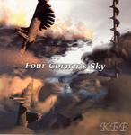

| Artist: | KBB |
| Title: | Four Corner's Sky |
| Label: | Poseidon PRF-008/Musea 4501.AR |
| Length(s): | 56 minutes |
| Year(s) of release: | 2003 |
| Month of review: | [11/2003] |
| 1) | Discontinuous Spiral | 7.17 |
| 2) | Kraken's Brain Is Blasting | 9.35 |
| 3) | Horobi No Kawa | 6.53 |
| 4) | Backside Edge | 6.50 |
| 5) | Slave Nature | 6.41 |
| 6) | I Am Not Here | 9.13 |
| 7) | Shironji | 10.10 |
Kraken's Brain Is Blasting is something different. Okay, the violin is still the dominating factor, but now the playing raises the tension to extremely high levels. Guitars are also present here to lend the music more power. Although the music does die down sometimes and the bass and drum take over to be followed by some meandering guitar. After a few minutes the violin sets back in for another performance. The following quiet sequence is led by violin and piano and cymbals in the back. Around the six minute mark the song reaches the rapids, leading to a tension rich, frenetic ending. Sometimes I am reminded of Calamity by David Cross.
With Horobi No Kawa the manicness disappears again. In fact, it opens very peaceful with a nice simple theme piano. The song has a laid back seventies jazzrock mood with light piano and drums and a strong melodic bass presence. A melancholic track, but certainly not boring, it has a very nice flow to it.
The bass ups the ante on Backside Edge, which is a more typical jazzy track. Fast riffing on the violin and the rest of the band playing along, this is quite similar to the jazzrock of the seventies, although the violin is only rarely the dominating factor there. Think of Brand X here, but also the American side of jazzrock. There is more swing on this song than on previous ones. Plenty of rowdy organ playing, as well as a striking drum solo, there are elements which are quite in the line of modern Brand X. The final few minutes are for the violin again.
Slave Nature brings us back to a somewhat darker side of the band it seems at first, but the opening is in fact very thematic played by violin. Again, the vibes are warm. Excellent melodic playing on the violin here, while the organ also adds some darkness to the mix. In other places, the song can be very friendly and peaceful, a bit too sweet even, and a bit funky too. In the middle we are in for some fast paced playing with heavy guitarwork, going a bit in the direction of early day Kansas. At the end, the themes of the opening return.
I Am Not Here opens almost gamelan like, the music is quite dark and brooding with the violin and occasional notes on the piano and tension rich percussion. This is something quite different again. After a few minutes the music starts in earnest. It can be easily compared to latter day Univers Zero. Very good
The closer is Shironji, also the longest one on the album. The opening has both guitar and violin with this time a somewhat mellow melody. The guitar is quite emotional and bluesy. Among the songs here the most sugary, with some classically styled runs on violin. Still, it also contains some more appealling passages.